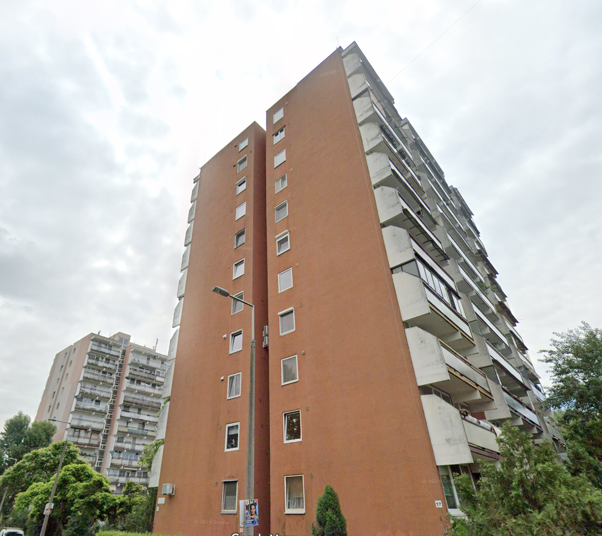

Bemutatkozás
Üdvözlöm, Szabó Áron vagyok a WESZ Kft. ügyvezetője. A WESZ Kft. családi vállalkozás, 30 éve áll a társasházak szolgálatában, kezeli azokat elkötelezett szakmaisággal és gondos odafigyeléssel. Jómagam és a munkatársak is rendelkeznek a jogszabályban előírt társasházkezelő szakképesítéssel és regisztrációval. A társasházak könyvelését regisztrált mérlegképes könyvelő végzi. A WESZ Kft. 30 éve adó és köztartozásmentes vállalkozás, felelősség biztosítással rendelkezik.
Ars Poetica
Átlátható és elérhető Rendkívül fontosnak tartjuk, hogy maximalizáljuk a tulajdonosok biztonságérzetét. Ezért az eHÁZ társasházkezelő programmal dolgozunk, mely folyamatosan elérhető, informálja a tulajdonosokat és a számvizsgálókat a társasház pénzügyi állapotáról. Segítségével ellenőrizhetik saját egyenlegüket, előírásaikat, befizetéseiket, rögzíthetik óraállásaikat valamint letölthetik a társasház alapdokumentumait, iratait, közgyűlési jegyzőkönyveit.
Együttműködés és tudatosság
Az Ön lakásának vagyoni értékét befolyásolja a társasház épületének állapota. Egy rossz állapotú épület leértékeli, egy karbantartott épület felértékeli ingatlanát. A tudatos lakástulajdonosok felismerik, hogy a közös tulajdon megfelelő kezelése közös érdekük. Ha a közösség szándéka találkozik egy jó társasházkezelő szakemberrel, döntéseik sora garantáltan meghozza a sikert.

Szakmai díj
Cégünk 2022-ben elnyerte a THT szakmai díját, Digitális innováció kategóriában
Szolgáltatásaink
0-24 órás elérhetőség

Munkaidőben 9:00-17:00 óráig elérhetőek vagyunk, akár telefonon, akár email-ben. Munkaidőn túl, valamint a munkaszüneti és az ünnepnapokon átirányítjuk a telefont egy gyorsszolgálat diszpécser szolgálatához, akik ebben az intervallumban is tudnak műszaki segítséget adni. Ez az opció halasztást nem tűrő műszaki problémák, vészhelyzet esetén használandó, Pl.: éjszakai csőtörés.
Mit tartalmaz a képviseleti díj?
- Évzáró közgyűlés összehívása, határozatok előkészítése, végrehajtása. (Rendkívüli közgyűlések, további közgyűlések lebonyolítását külön díjazásért tudjuk vállalni.)
- Éves beszámoló, gazdálkodási terv elkészítése a számvizsgálókkal
- Pénzügyek kezelése mérlegképes könyvelővel. Közös költség beszedése, hátralékkezelés.
- Társasház üzemeltetése, hibaelhárítás, időszerű és tervszerű karbantartások, kötelező ellenőrzések.
- Az eHÁZ társasházkezelő program szolgáltatást.
- Képviseleti jogkör ellátása, intézkedés mindazon ügyekben, amelyek nem tartoznak a köz- gyűlés hatáskörébe.
- Átvétel esetén aktuális évet visszamenőleg ingyenesen újrakönyveljük a bankszámla kivonatok alapján. Ez azért fontos Önöknek és nekünk is, mert így kapunk tiszta képet a társasház gazdasági működéséről. (Szükség esetén további évek újrakönyvelését külön díjazásért tudjuk vállalni.)